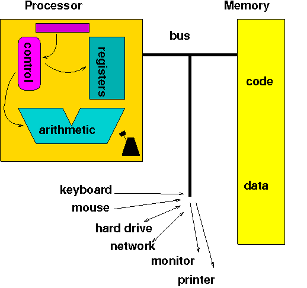
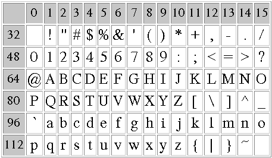

Computer operations follow the fetch/execute cycle:
How do computers represent numbers, text, pictures, sound, movies, instructions?
Computers are electronic devices that understand only two states
(analogous to Morse code)
Computers represent information using a binary arithmetic system in which numbers are represented using the binary digits ("bits") 0 and 1:
| Decimal | Binary |
|---|---|
| 0 | 0 |
| 1 | 1 |
| 2 | 10 |
| 3 | 11 |
| 4 | 100 |
| 5 | 101 |
| 6 | 110 |
| 7 | 111 |
| 8 | 1000 |
| 9 | 1001 |
| 10 | 1010 |
| 11 | 1011 |
| 12 | 1100 |
| 13 | 1101 |
| 14 | 1110 |
| 15 | 1111 |
Both systems are positional - the position of each digit in the number determines its value:
1492 = 1*1000 + 4*100 + 9*10 + 2*1
19 = 1*16 + 0*8 + 0*4 + 1*2 + 1*1
The decimal system is also called "base 10" and the binary system "base 2"
Other binary systems:
|
|
Number converter:
Experiment with this form to convert between bytes (8-bit binary numbers) and decimal numbers - what's the largest decimal number you can represent?
What's so grand about a positional system? Arithmetic calculations are easier than in non-positional systems, like Roman numerals - imagine what second grade would be like if you had to calculate XLVIII + LXVII = CXV !!
Text is represented with the ASCII code, captured in this table:

Add the row and column numbers to get the ASCII code - A is represented by decimal number 65 or binary number 01000001, and "Hi!" is represented by the sequence 72 105 33, or binary 010010000110100100100001
Control characters and line endings
The table starts with ASCII code 32 (space character) - the first 32 characters are control characters, used to control the early printers
Representing line endings is tricky: the Mac represents the end of a line with a carriage return character (CR, ASCII code 13), Linux uses a line feed character (NL, ASCII code 10), and Windows uses both
Usually, when you transfer a text file from system to system, the FTP program (e.g. Fetch or WinSCP) substitutes the appropriate line ending - the "text mode" of transfer says to make these substitutions, "binary mode" makes no substitutions and is more suitable for non-text files, such as images or programs
Unicode:
The early ASCII system had space for 256 symbols, only enough to represent all English characters, punctuation marks, numbers, etc.
The global community has shifted to a much larger code called Unicode
Once you can represent numbers and characters, you can also represent instructions! This observation led von Neumann and his collaborators to create the first general purpose, re-programmable computer
In future lectures, we'll learn how the computer represents images, sound and movies
A group of bits used to represent a character came to be known as a byte, which is 8 bits
Names for larger groups of bytes:
Modern computers come with huge amounts of storage space on the hard drive (often hundreds of GB), but are usually able to process only a few GB at a time (their main memory or RAM)